Ceteris Paribus Profiles aka Individual Variable Profiles
Source:R/ceteris_paribus.R
ceteris_paribus.RdThis explainer works for individual observations. For each observation it calculates Ceteris Paribus Profiles for selected variables. Such profiles can be used to hypothesize about model results if selected variable is changed. For this reason it is also called 'What-If Profiles'.
ceteris_paribus(x, ...)
# S3 method for explainer
ceteris_paribus(
x,
new_observation,
y = NULL,
variables = NULL,
variable_splits = NULL,
grid_points = 101,
variable_splits_type = "quantiles",
...
)
# S3 method for default
ceteris_paribus(
x,
data,
predict_function = predict,
new_observation,
y = NULL,
variables = NULL,
variable_splits = NULL,
grid_points = 101,
variable_splits_type = "quantiles",
variable_splits_with_obs = FALSE,
label = class(x)[1],
...
)Arguments
- x
an explainer created with the
DALEX::explain()function, or a model to be explained.- ...
other parameters
- new_observation
a new observation with columns that corresponds to variables used in the model
- y
true labels for
new_observation. If specified then will be added to ceteris paribus plots. NOTE: It is best when target variable is not present in thenew_observation- variables
names of variables for which profiles shall be calculated. Will be passed to
calculate_variable_split. If NULL then all variables from the validation data will be used.- variable_splits
named list of splits for variables, in most cases created with
calculate_variable_split. If NULL then it will be calculated based on validation data available in theexplainer.- grid_points
maximum number of points for profile calculations. Note that the finaln number of points may be lower than
grid_points, eg. if there is not enough unique values for a given variable. Will be passed tocalculate_variable_split.- variable_splits_type
how variable grids shall be calculated? Use "quantiles" (default) for percentiles or "uniform" to get uniform grid of points
- data
validation dataset. It will be extracted from
xif it's an explainer NOTE: It is best when target variable is not present in thedata- predict_function
predict function. It will be extracted from
xif it's an explainer- variable_splits_with_obs
if
TRUEthen all values innew_observationwill be included invariable_splits- label
name of the model. By default it's extracted from the
classattribute of the model
Value
an object of the class ceteris_paribus_explainer.
Details
Find more details in Ceteris Paribus Chapter.
References
Explanatory Model Analysis. Explore, Explain, and Examine Predictive Models. https://ema.drwhy.ai/
Examples
library("DALEX")
library("ingredients")
titanic_small <- select_sample(titanic_imputed, n = 500, seed = 1313)
# build a model
model_titanic_glm <- glm(survived ~ gender + age + fare,
data = titanic_small,
family = "binomial")
explain_titanic_glm <- explain(model_titanic_glm,
data = titanic_small[,-8],
y = titanic_small[,8])
#> Preparation of a new explainer is initiated
#> -> model label : lm ( default )
#> -> data : 500 rows 7 cols
#> -> target variable : 500 values
#> -> predict function : yhat.glm will be used ( default )
#> -> predicted values : No value for predict function target column. ( default )
#> -> model_info : package stats , ver. 4.2.2 , task classification ( default )
#> -> predicted values : numerical, min = 0.0795294 , mean = 0.302 , max = 0.9859411
#> -> residual function : difference between y and yhat ( default )
#> -> residuals : numerical, min = -0.8204691 , mean = 8.796651e-12 , max = 0.8567173
#> A new explainer has been created!
cp_rf <- ceteris_paribus(explain_titanic_glm, titanic_small[1,])
cp_rf
#> Top profiles :
#> gender age class embarked fare sibsp parch _yhat_ _vname_ _ids_
#> 515 female 45.00 2nd Southampton 10.1 0 0 0.5595687 gender 515
#> 515.1 male 45.00 2nd Southampton 10.1 0 0 0.1448038 gender 515
#> 5151 male 0.75 2nd Southampton 10.1 0 0 0.3135247 age 515
#> 515.110 male 2.99 2nd Southampton 10.1 0 0 0.3028164 age 515
#> 515.2 male 4.98 2nd Southampton 10.1 0 0 0.2934793 age 515
#> 515.3 male 7.00 2nd Southampton 10.1 0 0 0.2841757 age 515
#> _label_
#> 515 lm
#> 515.1 lm
#> 5151 lm
#> 515.110 lm
#> 515.2 lm
#> 515.3 lm
#>
#>
#> Top observations:
#> gender age class embarked fare sibsp parch _yhat_ _label_ _ids_
#> 515 male 45 2nd Southampton 10.1 0 0 0.1448038 lm 1
plot(cp_rf, variables = "age")

# \donttest{
library("ranger")
model_titanic_rf <- ranger(survived ~., data = titanic_imputed, probability = TRUE)
explain_titanic_rf <- explain(model_titanic_rf,
data = titanic_imputed[,-8],
y = titanic_imputed[,8],
label = "ranger forest",
verbose = FALSE)
# select few passangers
selected_passangers <- select_sample(titanic_imputed, n = 20)
cp_rf <- ceteris_paribus(explain_titanic_rf, selected_passangers)
cp_rf
#> Top profiles :
#> gender age class embarked fare sibsp parch _yhat_
#> 515 female 45 2nd Southampton 10.1000 0 0 0.8130768
#> 515.1 male 45 2nd Southampton 10.1000 0 0 0.1134421
#> 604 female 17 3rd Southampton 7.1701 1 0 0.4691766
#> 604.1 male 17 3rd Southampton 7.1701 1 0 0.1146410
#> 1430 female 25 engineering crew Southampton 0.0000 0 0 0.7580796
#> 1430.1 male 25 engineering crew Southampton 0.0000 0 0 0.2382367
#> _vname_ _ids_ _label_
#> 515 gender 515 ranger forest
#> 515.1 gender 515 ranger forest
#> 604 gender 604 ranger forest
#> 604.1 gender 604 ranger forest
#> 1430 gender 1430 ranger forest
#> 1430.1 gender 1430 ranger forest
#>
#>
#> Top observations:
#> gender age class embarked fare sibsp parch _yhat_
#> 515 male 45 2nd Southampton 10.1000 0 0 0.1134421
#> 604 male 17 3rd Southampton 7.1701 1 0 0.1146410
#> 1430 male 25 engineering crew Southampton 0.0000 0 0 0.2382367
#> 865 male 20 3rd Cherbourg 7.0406 0 0 0.1177139
#> 452 female 17 3rd Queenstown 7.1408 0 0 0.6675361
#> 1534 male 38 victualling crew Southampton 0.0000 0 0 0.1723540
#> _label_ _ids_
#> 515 ranger forest 1
#> 604 ranger forest 2
#> 1430 ranger forest 3
#> 865 ranger forest 4
#> 452 ranger forest 5
#> 1534 ranger forest 6
plot(cp_rf, variables = "age") +
show_observations(cp_rf, variables = "age") +
show_rugs(cp_rf, variables = "age", color = "red")
 # }
# }